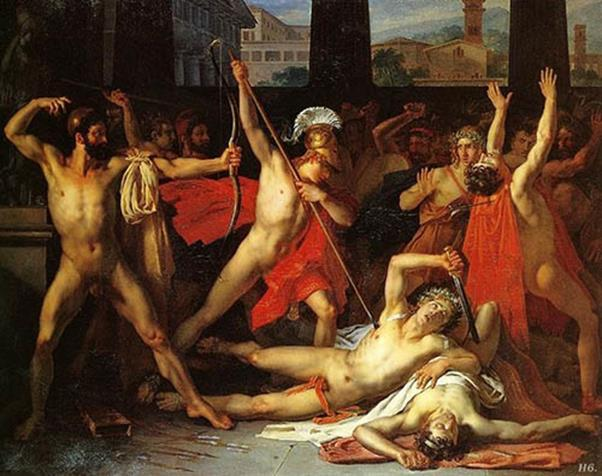

Thực hiện ý định của mình, nàng Pénélope thận trọng, con gái của người anh hùng Icarios, hôm sau sai gia nhân sửa soạn gian phòng lớn cho cuộc tỉ thí. Trái tim nàng buồn khôn xiết khi nàng bước vào căn phòng riêng của vợ chồng nàng. Từ ngày chồng nàng ra đi, nàng ngủ ở trên tầng gác cao. Hôm nay nàng lên căn phòng chứa chất bao kỷ niệm êm ấm hạnh phúc của nàng để lấy chiếc cung và ống tên của chồng nàng đem xuống cho bọn cầu hôn tỉ thí, cuộc tỉ thí sẽ quyết định số phận nàng. Ngồi trong phòng, đặt chiếc cung vào lòng, nàng bưng mặt khóc nức nở. Sau đó nàng đem cây cung và ống tên đến gian phòng lớn nơi bọn cầu hôn đã tề tựu đông đủ. Đi theo nàng là hai người nữ tì xinh đẹp rất đỗi trung thành. Đứng trước bọn cầu hôn đông đảo, nàng cất tiếng nói:
- Hỡi các vị cầu hôn hống hách đã ngày ngày đến căn phòng này chè chén khi chủ nó vắng nhà. Đây là một điều kiện mà không một ai có thể khước từ nếu người đó muốn kết hôn với ta. Xin các vị lắng nghe cho rõ. Ta chỉ kén chọn được một người trong số các vị để làm chồng thôi, vì thế đây là lúc các vị phải trổ tài cao thấp trong một cuộc tỉ thí mà ta sẽ nói rõ sau đây. Ta long trọng tuyên bố rằng vị nào giương được cây cung trứ danh này để bắn một phát tên xuyên qua mười hai cái lỗ của mười hai cây rìu xếp thành một hàng dọc kia ta xin theo người ấy. Người ấy sẽ được quyền làm chồng ta. Việc thật đơn giản. Trân trọng mời các vị hãy trổ tài để ta được ngưỡng mộ một anh hùng đã chiến thắng trong cuộc thử thách...
Người đầu tiên xin được tỉ thí là gã cầu hôn Léiodès, nhưng hắn chẳng thể nào giương nổi cây cung. Tiếp đó nhiều vị nữa quyết vượt qua thử thách để đoạt được nàng Pénélope cùng với của cải nhiều vô kể của nàng nhưng không sao vượt nổi. Chỉ còn lại Antinoos và Eurymaque, hai con người danh tiếng cao lớn, to khỏe như hai vị thần xưa nay chưa từng chịu bó tay quy hàng trong những cuộc đua tranh, là chưa vào cuộc. Cuối cùng, Eurymaque đứng ra thử sức. Hắn ráng hết sức kéo dây cung cho căng để có thể khi buông tay làm mũi tên bay đi nhưng ba lần hắn chịu thất bại. Hắn buông cây cung và kêu lên những lời thất vọng. Antinoos thấy vậy liền tuyên bố hoãn cuộc tỉ thí đến ngày mai. Ngày mai những người tham dự cuộc tỉ thí sẽ làm một lễ hiến tế vị thần xạ thủ Apollon, người bắn tên xa muôn dặm, bách phát bách trúng, cầu xin thần phù hộ cho rồi mới tiếp tục, và bọn cầu hôn hết thảy đều tán thưởng. Chúng thét gọi những nữ tì rót rượu vang, dâng thịt tiếp cho chúng chè chén và chúng mơ tưởng đến thắng lợi ngày mai. Bây giờ đến lúc người anh hùng Ulysse thực thi mưu kế của mình. Chàng ra khỏi gian phòng lớn đến gặp hai người đầy tớ trung thành là ông lão chăn lợn Eumée và người chăn cừu Philétios báo cho họ biết rằng mình là Ulysse, người chủ của họ đã cải trang trở về để trừng trị bọn cầu hôn. Họ lập tức đi đóng chặt các cửa ngõ trong nhà. Sau đó Ulysse trở lại gian phòng lớn và đứng lên xin phép được tỉ thí. Bọn cầu hôn nhao nhao phản đối. Chúng khinh thị người hành khất, chế giễu lão chẳng biết thân biết phận nghèo hèn của mình mà lại dám “đũa mốc chòi mâm son”, chẳng biết “Khánh vàng còn chẳng ai ăn ai. Huống chi mảnh chĩnh ở ngoài bờ tre”.
Nhưng nàng Pénélope khôn ngoan đứng ra bảo vệ cho quyền được tham dự thi tài của người hành khất bằng những lời lẽ khéo léo không thể bác bỏ được, và Ulysse đứng ra trổ tài. Chàng cầm lấy cây cung, tay trái đưa lên ngang vai, tay phải cầm dây cung kéo mạnh. Dây cung căng ra và rít lên như tiếng rít của con chim nhạn. Bọn cầu hôn sửng sốt. Chàng buông tay. Mũi tên bị dây cung nẩy bật đi kêu đánh tách một cái và xuyên qua mười hai lỗ của mười hai chiếc rìu bay vọt ra ngoài. Chàng nhìn Télémaque nháy mắt ra hiệu. Télémaque liền đeo gươm vào sườn và lấy dao nhọn cầm tay lăm lăm chờ đợi. Ulysse cất tiếng nói dõng dạc:
- Cuộc tỉ thí vô cùng khó khăn như vậy là đã kết thúc. Giờ đây ta xin nhằm cho một cái đích khác mà các vị quyền quý ở đây chưa ai nhằm bắn. Ta muôn biết xem liệu thần Apollon có ban cho ta vinh dự bắn trúng cái đích đó không?
Nói xong Ulysse nhằm Antinoos bắn một phát tên. Phát tên bay đi xuyên trúng họng tên cầu hôn hung hăng nhất, đúng vào lúc hắn đang cầm cốc rượu sắp đưa lên miệng. Antinoos bật ngửa người ra, máu trào ra mũi, chân giãy giụa đạp vào bàn làm thức ăn, bánh mì, thịt quay đổ xuống đất. Bọn cầu hôn hoảng hốt, chạy nhớn nha nhớn nhác đưa mắt quanh phòng mong tìm được một thứ vũ khí gì đó treo trên tường. Một tên cầu hôn lớn tiếng quát:
- Này hỡi cái thằng tứ cô vô thân, cha vơ chú váo kia! Tại sao ngươi lại lấy Antinoos thần thánh của chúng ta ra làm một cái đích để ngươi nhắm bắn! Ngươi đã phạm một tội ác, giết chết một người cao quý nhất trong số những người cao quý ở hòn đảo Ithaque này. Ngươi sẽ bị trừng phạt khủng khiếp.
Ulysse quắc mắt nhìn chúng, quát lớn:
- Hỡi lũ chó má điên cuồng! Các ngươi tưởng rằng ta đã bỏ mình ở thành Troie rồi ư? Không về nữa ư? Vì thế nên các ngươi đến đây tự do hoành hành phá hoại tài sản của ta, thúc ép vợ ta, cưỡng hiếp những nữ tì của ta. Các ngươi chẳng kính sợ thần linh và cũng không biết đến lẽ phải thông thường là ác giả ác báo. Giờ đây thì đòn trừng phạt đã treo lơ lửng trên đầu các ngươi rồi đấy!
Ulysse nói vậy. Lũ cầu hôn sợ tái xanh xám cả người. Chúng có ngờ đâu đến tình cảnh này, chúng cứ tưởng Ulysse bắn nhầm phải Antinoos. Eurymaque thấy tình cảnh nguy ngập, cửa phòng đóng chặt, vũ khí không có trong tay, nếu muốn thoát chết thì chỉ có cách van xin Ulysse, và Eurymaque đã cất lời van xin tha tội và hứa bồi thường lại gấp bội số của cải mà chúng đã làm tổn hại, nhưng Ulysse quyết không tha cho những kẻ đã gây ra bao nỗi đau khổ, cơ cực cho gia đình chàng. Chàng thách thức giao đấu. Bọn cầu hôn hoảng hồn. Eurymaque lên tiếng kêu gọi bọn chúng bình tĩnh chấp nhận cuộc giao đấu để tìm cách giải thoát:
- Hỡi các bạn thân thiết! Tình hình này buộc chúng ta chỉ còn một phương kế để cứu sống lấy mình là chấp nhận cuộc giao tranh với Ulysse. Hãy rút kiếm ra, hãy lấy bàn làm lá chắn chống lại những mũi tên ác hiểm của hắn. Hãy cùng nhau xông thẳng vào hắn đánh bật hắn ra khỏi ngưỡng cửa để chúng ta vượt ra ngoài đô thành kêu cứu. Hãy dũng cảm chấp nhận thách thức! Tên khốn khiếp kia ắt phải đền tội.
Nói xong Eurymaque vung thanh kiếm đồng sắc nhọn xông vào Ulysse với một tiếng thét lớn, nhưng mũi tên của Ulysse bay nhanh đã xuyên ngay vào ngực y. Y buông thanh kiếm đưa tay ôm ngực ngã lăn ra đất, giãy chết. Tên cầu hôn Amphinomos cầm kiếm xông vào Ulysse toan đánh bật Ulysse ra khỏi cửa. Télémaque luôn sẵn sàng. Từ phía sau, cậu phóng ngọn lao nhọn xuyên qua lưng đâm phá ra trước ngực tên cầu hôn láo xược. Amphinomos đổ sấp mặt xuống đất. Télémaque không chạy đến bên thi hài tên cầu hôn để rút ngọn lao ra. Cậu sợ kẻ thù nhằm lúc đó xông lên đâm kiếm vào người cậu. Cậu chạy vội đi lấy vũ khí cho mình và cho cha, cho hai người gia nhân trung thành: bốn chiếc khiên, tám ngọn lao, bốn mũ trụ đồng. Tất cả bốn người đứng trấn giữ ở cửa. Ulysse tiếp tục bắn tên vào lũ cầu hôn. Mỗi mũi tên bay đi và đã làm tròn nhiệm vụ quang vinh của nó: kết liễu cuộc đời một tên cầu hôn, nhưng ống tên đã cạn. Ulysse bèn đội mũ trụ lên đầu, khoác khiên vào vai và cầm lấy hai ngọn lao đồng để tiếp tục chiến đấu.
Thắng lợi tưởng như cầm chắc trong tay thì bỗng đâu nảy ra một tình hình rắc rối, bất lợi. Tên chăn dê Mélanthios, một kẻ phản phúc đã từng lăng nhục, xua đuổi Ulysse khi chàng giả dạng làm người hành khất đến căn phòng lớn và cung cúc tận tụy phục vụ, hầu hạ bọn cầu hôn, giờ đây tìm cách giúp đỡ chúng. Hắn luồn được ra ngoài nhờ ở một chiếc cửa ngách nào đó và chạy đến chỗ để vũ khí. Hắn chạy đi chạy lại đem đến cho bọn cầu hôn mười hai chiếc khiên, mười hai ngọn lao đồng và mười hai chiếc mũ trụ bằng đồng. Thấy bọn cầu hôn bỗng dưng có khiên, lao và mũ trụ, Ulysse bối rối, chột dạ. Chàng nói với Télémaque:
- Télémaque con ơi! Con xem ngay xem có đứa nào nối giáo cho giặc làm cho cuộc giao tranh của chúng ta sinh chuyện khó khăn như thế này. Tìm cách đối phó trừng trị ngay.
Télémaque đáp lại lời cha:
- Cha ơi! Cha tha tội cho con. Vì con sơ ý không đóng kín bịt chặt hết mọi cửa nên mới còn có một lối thoát ra ngoài, do đó một kẻ phản phúc nào đấy đã đi lấy vũ khí đem về cho bọn chúng. Hẳn lại là gã Mélanthios!
Và cậu ra lệnh cho ông già Eurymaque:
- Lão Eurymaque ơi! Lão tìm cách bịt ngay cái cửa ngách nào đó lại và theo dõi xem tên phản phúc nào đã chi viện vũ khí cho bọn cầu hôn.
Eurymaque tuân lệnh ra đi và chỉ một lát đem tin về:
- Hỡi Ulysse, người anh hùng trăm nghìn kế, con nuôi của Zeus và con đẻ của lão vương Laerte! Chính tên Mélanthios đốn mạt đã làm cái công việc phản phúc nguy hiểm đó. Ta thấy nó chạy đến nhà kho chứa vũ khí. Ta thì già yếu, nghĩ mình giết hắn thì khó mà bắt sống hắn để giải về đây thì chẳng được nên ta phải về đây để trình báo với ngài!
Ulysse người anh hùng kiên định đáp lại:
- Hỡi Eurymaque và Philétios! Dù bọn cầu hôn có liều mạng đến đâu để tìm cách vượt ra khỏi phòng này thì ta và Télémaque cũng quyết đánh bật chúng trở lại. Hai người hãy yên tâm. Ngay bây giờ hai người lập tức đến chỗ nhà kho tìm cách bắt sống bằng được tên phản phúc ấy. Hãy trói hắn lại, nhốt hắn trong nhà kho, đóng chặt cửa lại. Chúng ta sẽ tính chuyện với quân đốn mạt ấy sau khi trừng trị xong bọn cầu hôn.
Tuân lệnh Ulysse, hai gia nhân của chàng vội đến nhà kho. Hai người nấp rình sau cánh cửa, mỗi người một bên. Tên chăn dê Mélanthios lúc này đang lục tìm vũ khí trong kho. Hắn lấy được vũ khí đem ra đến cửa thì ập một cái, như một cơn gió mạnh, ông già Eurymaque và người chăn chiên Philétios xông ra chặn đường quật ngã Mélanthios, túm lấy tóc hắn lôi tuột vào trong nhà kho. Họ trói quặt tay tên phản phúc về sau lưng và không quên quấn thêm nhiều vòng dây nữa quanh người hắn. Sau đó họ treo hắn lơ lửng giữa nhà. Rất nhanh chóng, họ rời khỏi nhà kho, đóng chặt cửa lại, trở lại cùng với cha con Ulysse trấn giữ trước cửa gian phòng lớn. Nữ thần Athéna lúc này cũng đến bên Ulysse khích lệ lòng dũng cảm của chàng. Nàng chưa lao vào cuộc giao tranh đẫm máu lúc này mà biến mình thành một con chim én bay vụt lên đậu ở trên xà nhà.
Bọn cầu hôn dưới sự cầm đầu của Agélaos không hề nản chí. Chúng quyết chiến để thoát ra ngoài bằng được. Agélaos ra lệnh cho sáu người, chỉ sáu người thôi, cùng một lúc phóng lao và chỉ nhằm vào Ulysse. Theo hắn thì một khi Ulysse đã bị đánh gục thì ba người kia đối với bọn chúng chẳng đáng kể gì.
Thế là cả sáu tên cầu hôn cùng một lúc phóng mạnh sáu ngọn lao dài nhọn hoắt. Nữ thần Athéna thấy vậy bèn ra tay. Nàng làm cho những ngọn lao bay không trúng đích như bọn cầu hôn mong muốn. Đứa thì phóng lao trúng tường, đứa thì phóng lao trúng cánh cửa, đứa thì trúng bậu cửa... tất cả sáu ngọn lao phóng đều vô ích. Ulysse liền ra lệnh đánh trả. Bốn ngọn lao phóng đi và bốn ngọn lao đều làm tròn nhiệm vụ quang vinh của mình. Bốn tên cầu hôn đều bị lao nhọn xuyên trúng ngực, trúng bụng ngã vật xuống đất giãy giụa. Bọn còn lại liền lui sâu vào cuối căn phòng. Bốn người liền xông lên rút những ngọn lao đồng ở bốn xác chết đẫm máu ra để có vũ khí tiếp tục chiến đấu. Bọn cầu hôn lại phóng lao. Lần này Télémaque bị một ngọn lao sướt qua cổ tay, không gây nguy hiểm, còn Eurymaque thì suýt chết. Một ngọn lao bay lướt trên vai ông già rơi xuống đất. Phe Ulysse tiếp tục tấn công. Lại bốn tên cầu hôn nữa đền tội. Nữ thần Athéna xuất hiện. Từ trên xà nhà cao nàng hiện ra, giương chiếc khiên danh tiếng lẫy lừng của mình ra. Bọn cầu hôn trông thấy nữ thần với chiếc khiên ấy sợ hãi rụng rời. Chúng không còn hồn vía nào để tiếp tục cuộc giao tranh. Chúng la hét bỏ chạy hòng tìm một lối thoát ra ngoài, nhưng vô ích. Hai cha con Ulysse và hai người đầy tớ trung thành xông vào lũ cầu hôn, phóng lao, vung kiếm đâm chém. Họ không gặp một sự kháng cự nào nữa. Chỉ phút chốc xác bọn cầu hôn nằm ngổn ngang trên nền nhà, máu chảy lênh láng, thật rùng rợn.
Trong đám bọn cầu hôn có người ca sĩ Phémios chẳng có lao dài và kiếm nhọn. Lão chỉ có cây đàn và lời ca. Sợ hãi trước cái chết kề bên, lão vứt vội cây đàn xuống đất, chạy đến quỳ trước mặt Ulysse ôm lấy đầu gối của chàng mà cất tiếng van xin:
- Hỡi Ulysse, ta xin ngài đừng giết ta! Xin ngài đừng cự tuyệt lời cầu xin của ta! Nếu ngài giết một nghệ nhân đã từng hát và chỉ có việc chuyên hát cho các vị thần bất tử và những người trần đoản mệnh nghe để làm vui lòng họ thì sau này ngài sẽ lấy làm ân hận. Chính nhờ thần linh truyền dạy mà ta biết đàn ca. Hơn nữa ta đến nhà này đem tiếng đàn và lời ca của mình phục vụ cho bọn cầu hôn trong những lúc chúng say sưa chè chén chẳng phải do lòng ta muốn và thích thú. Ta phải đến là vì bọn họ đông người có quyền lực và sức mạnh hơn ta, ép buộc ta. Chính cậu Télémaque là người có thể xác nhận điều ta nói là đúng.
Télémaque nghe lão ca sĩ thần thánh nói như vậy. Cậu bèn nói với cha:
- Xin cha hãy ngừng tay! Xin cha đừng trừng trị lão vì lão không có tội, và nếu Médon, người truyền lệnh còn chưa bị ngọn lao hay mũi kiếm của cha con ta hay của ông già Eurymaque và bác Philétios thì xin cha hãy tha cho ông ấy nữa. Ông ta là người tốt bụng. Khi cha vắng nhà chính ông ấy đã chăm nom, săn sóc con.

Télémaque nói vậy và Médon lúc đó nấp dưới một chiếc ghế bành trùm kín người bằng một tấm da bò để tránh cái chết nghe thấy hết. Ông lập tức chui ra, quỳ trước Télémaque, van xin cậu nói với người cha thân yêu đừng giết ông vì ông vô tội, vì ông cũng rất căm ghét bọn cầu hôn.
Ulysse vui vẻ nói với hai người:
- Con trai ta đã bênh vực cho các người thì các người không việc gì mà phải lo sợ. Ta muốn hai người hiểu biết điều này và sẽ nói cho mọi người khác cùng biết: ở hiền thì gặp lành, ở ác thì gặp ác. Vì trong cuộc sống, ăn ở hiền lành thì bao giờ cũng tốt hơn, quý hơn là ăn ở độc ác, nhưng thôi các người hãy lui ra ngoài sân kia để chúng ta hoàn thành nốt những công việc phải làm.
Bốn người sục sạo khắp gian phòng lớn xem có còn tên cầu hôn nào lẫn trốn để hòng thoát chết không nhưng không thấy. Ulysse liền lệnh cho gia nhân đưa xác của bọn cầu hôn nằm ngổn ngang trong gian phòng lớn ra ngoài. Chàng chỉ dẫn cho mọi người cách rửa ráy gian phòng và bàn ghế sao cho thật sạch sẽ không còn mùi tanh tưởi của cuộc đổ máu khủng khiếp vừa rồi. Cuối cùng, chàng ra lệnh trừng trị những nữ tì phản phúc và tên chăn dê Mélanthios đốn mạt. Đòn trừng trị thật khủng khiếp và rùng rợn. Thật chẳng đáng kể ra chuyện này vì nó không còn chút gì là văn minh nhân đạo.